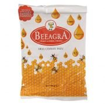
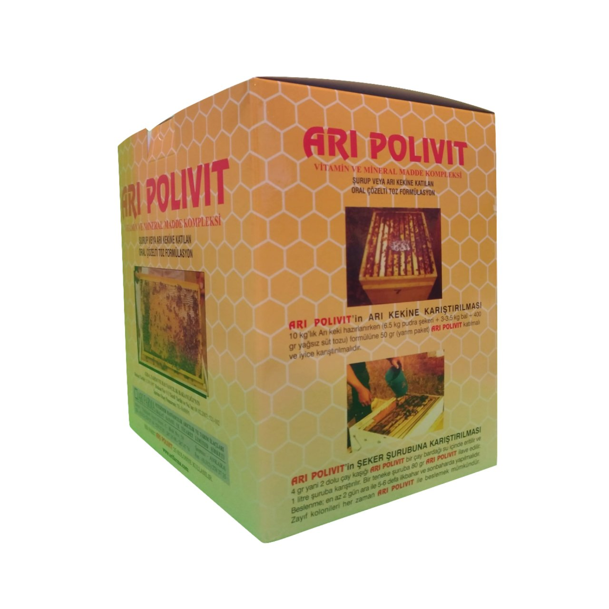
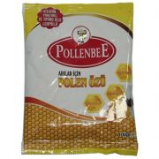
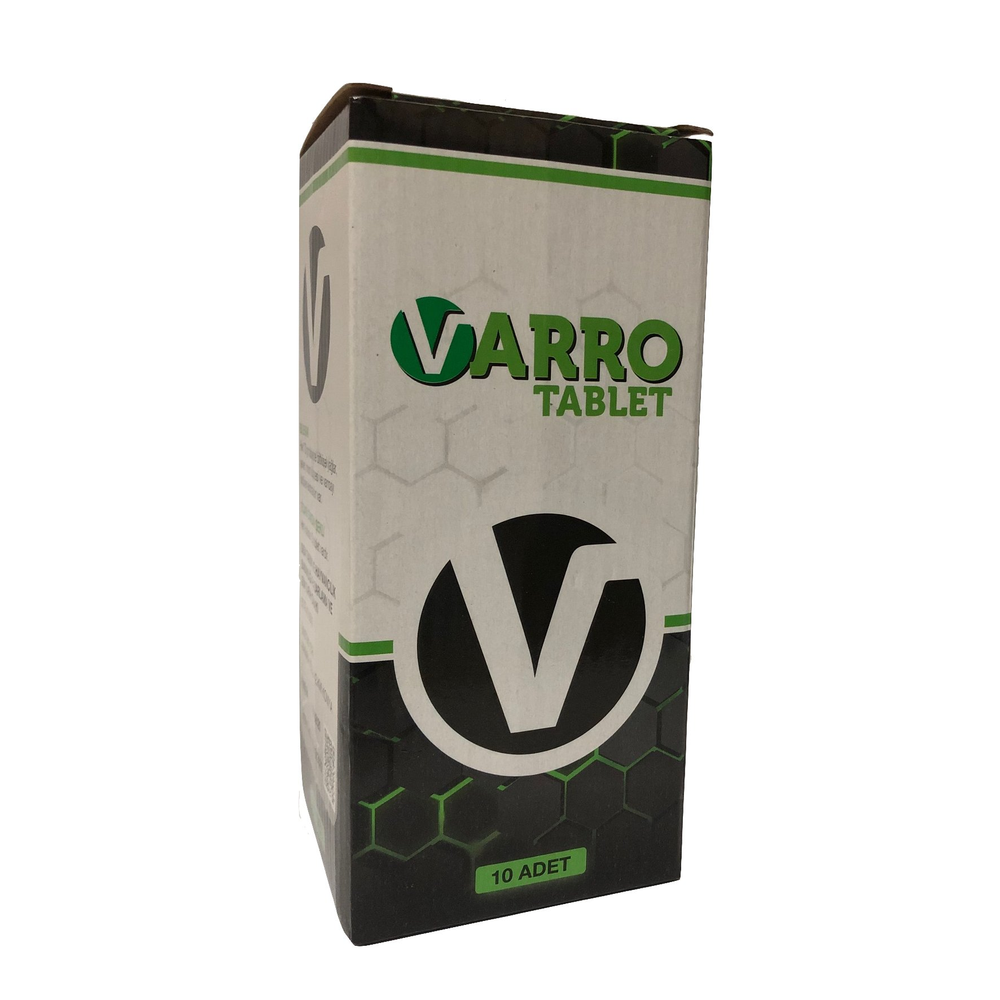

beeagra -Arı vitamini
Arılarda daha fazla bal üretimi için destek olur.
Kovan nakillerinde stresi önler.
Ana arıyı yumurtlamaya teşvik eder , Bu sayede daha güçlü ve hastalığa dirençli koloniler oluşmasına yardımcı olur.
Sonbahar ve bahar aylarında arıların gelişmesine yardımcı olur,Yaz aylarında koloninin daha güçlü olmasını sağlar.Bu sayede bal verimi artar.
Arıların çalışma performansını artırır , Genç arıların daha sağlıklı olmasını sağlar.

ARI POLİVİT
Bal arısı ergin ve yavrularının hastalıklara karşı korunmasında yardımcı olmaktadır. Ana arının yumurta bırakmasını hızlandırmakta, işçi arıların bal üretimini %25 - 30 oranında arttırmaktadır. Sonbaharda kullanılması halinde arıların kışa kuvvetli girmelerine yardımcı olmaktadır

POLLENBEE ARILAR İÇİN POLEN ÖZÜ
Dengeli ve güçlü multi vitamin, mineral ve amino asit kompleksi
Bal arılarının hastalıklar karşı vücüt direncini artırır.
Ana arının yumurta bırakmasını hızlandırır.
Koloninin kışa güçlü girmesini sağlar, ve zaiyatı en aza indirir.
Sağlıklı larva gelişimini düzenler.
Bal verimini artırır, arı ölümlerini azaltır.
Arı sütü verimini artırır.
Yağ ,gluten ve glikoz içermez.

Varro Tablet Varroa Önleyici Arı Yemi
Her 70 g tablette bitkisel yağlar, şeker, mısır küspesi ve varroa önleyeci ekstratlar bulunmaktadır.
Güçlü kolonilere bir tablet, zayıf kolonilere yarım tablet kullanılması tavsiye edilir.